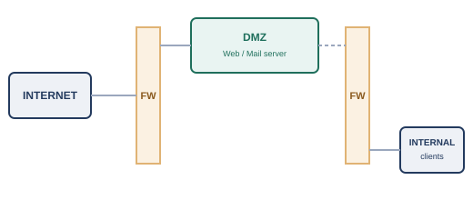
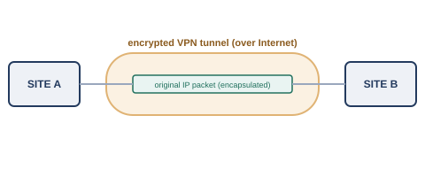

ここまでの章では、通信を「届ける」ための仕組みを中心に見てきました。しかし、通信が正しく届くだけでは十分ではありません。届いた情報が正しい相手以外には見えないこと、途中で改ざんされていないこと、そして必要なときにきちんと使える状態であることも、同じくらい重要です。この3つの観点を整理したものが、CIAの3要素です。NIST（米国国立標準技術研究所）のFIPS 199でも、この3つの喪失をセキュリティ上のリスクとして定義しています※1。
この章で扱うファイアウォールやVPNは主に機密性を、暗号化は機密性と完全性の両方を支える技術です。可用性については、第9章で見た冗長化の仕組み（SPOFの排除、HSRP/VRRP、LAGなど）が中心的な役割を果たします。つまり、この本でここまで見てきた技術の多くは、実はすでにCIAのどれかを支えていた、と捉え直すこともできます。
第8章では、ACLという、ルールに基づいて通信を許可・拒否する仕組みを見ました。ファイアウォールは、このACL的な発想をさらに発展させ、通信の状態（ステートフルインスペクション）やアプリケーションの中身まで検査対象に含めた、境界防御の専用機器・機能です。NISTのSP 800-41 Rev. 1（2009年発行、後継の改訂版はまだ出ていません）では、ファイアウォールの種類や配置方針が整理されています※2。
企業のネットワークでは、外部（インターネット）に公開する必要があるサーバ（Webサーバやメールサーバなど）と、社内でしか使わない機器を、同じ扱いにするわけにはいきません。外部公開サーバが仮に乗っ取られたとしても、そこから社内ネットワークの奥深くまで侵入されては困るからです。そこで使われるのが、DMZ（Demilitarized Zone、非武装地帯）という構成です。

DMZに置かれたサーバは、インターネットからのアクセスは許可されますが、社内の内部ネットワークへ自由にアクセスすることは許可されません。逆に、内部ネットワークの機器からDMZへのアクセスは、必要な範囲でのみ許可されます。このように、外部・DMZ・内部という3つのゾーンをそれぞれ別のファイアウォールルールで区切ることで、1か所が突破されても、残りの区画への影響を最小限に抑えられるようにするのが、DMZという考え方です。
第11章では、HTTPSがTLSという仕組みでHTTP通信を暗号化していることを見ました。この章では、その暗号化そのものの考え方を、数式には立ち入らず、概念のレベルで押さえておきます。
実際のHTTPS通信では、この2つの方式が組み合わされています。まず、公開鍵暗号を使って、通信のたびに使い捨てる共通鍵（セッション鍵）を安全に交換し、その後の実際のデータのやり取りは、処理が高速な共通鍵暗号で行う、という流れです。公開鍵暗号だけで大量のデータをやり取りするのは処理負荷が大きいため、「鍵交換には公開鍵暗号、本体の暗号化には共通鍵暗号」という役割分担が、多くの暗号化通信で採用されています。
なお、第1章でOSI参照モデルのL6（プレゼンテーション層）が「文字コードや暗号化・圧縮など、データの表現形式を扱う」層として紹介されていたことを覚えているでしょうか。第1章で見たとおり、実際のインターネットの世界では、TLSはL6という独立した層としてではなく、HTTPSというアプリケーションの中に組み込まれる形で実装されています。ただし、「データの中身をどう表現し、どう保護するか」という関心事そのものは、まさにこのL6が担う役割にあたります。
支社と本社を専用回線で結ぶには、多くの場合、高額な回線契約が必要です。VPNは、すでに世界中に張り巡らされているインターネットの上に、暗号化された「トンネル」を作ることで、あたかも専用回線でつながっているかのような通信を、低コストで実現する技術です。

拠点間を結ぶVPN（IPsecなど）の多くは、IPパケットそのものを暗号化し、別のIPパケットの中に包み込む（カプセル化する）ことで実現されています。IPsecはRFC 4301として標準化されている、IP層でのセキュリティを提供する枠組みです※3。また、個々の利用者が外出先から社内システムへ安全に接続する用途では、第11章で見たTLSの仕組みをそのまま使うSSL-VPN（SSLはTLSの旧称で、名前だけがこの呼び方に残っています）もよく使われます。